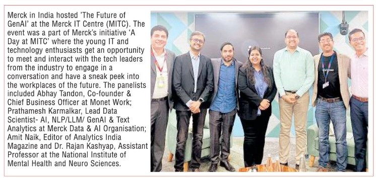
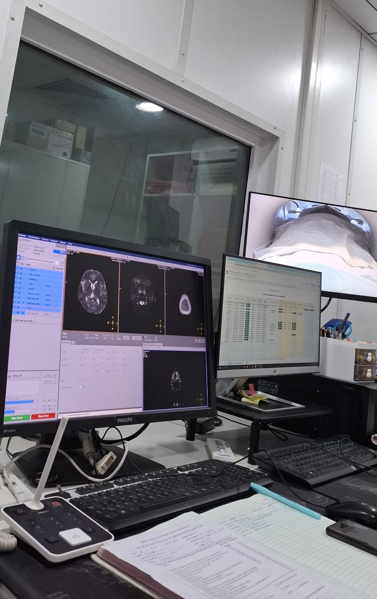
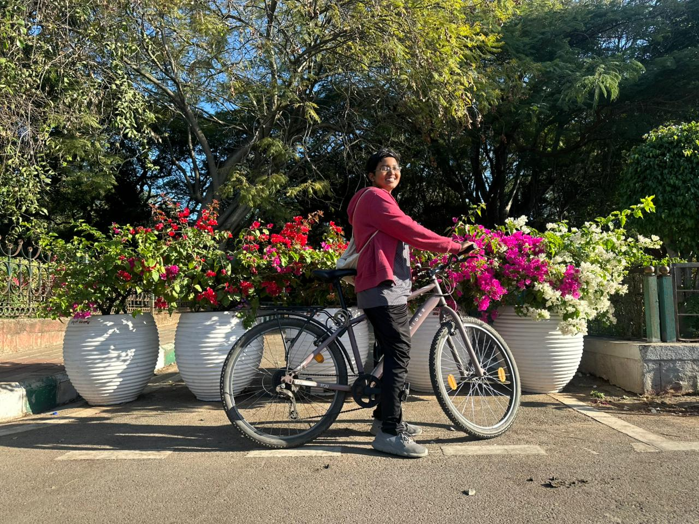
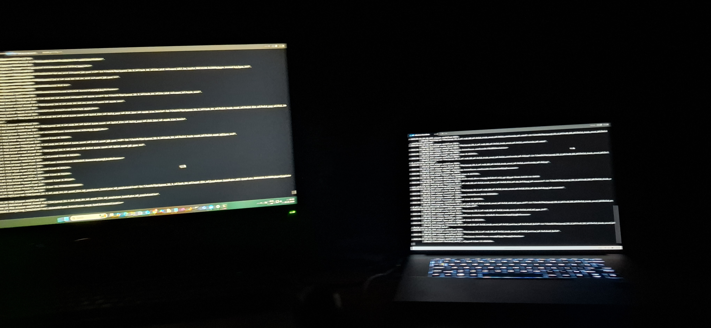
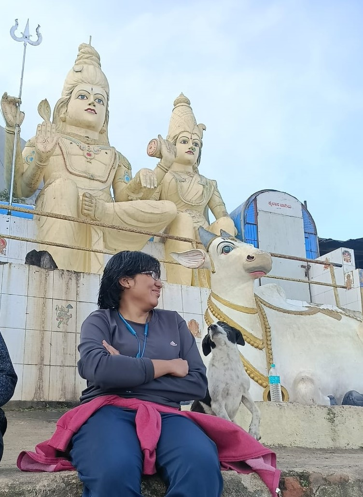

Pioneering research at the intersection of artificial intelligence and neurotherapeutics
Placing the brain within the framework of complex systems and network science has transformed our understanding of neuropsychiatric disorders. Rather than isolated dysfunctions, these conditions are now recognized as multi-scale, systems level processes involving structural atrophy, network reorganization, and nonlinear interactions across distributed brain systems.
With the rapid expansion of large scale brain imaging datasets including MRI, behavioural, clinical, and genomics data the next wave of breakthroughs will be driven by advanced AI methodologies capable of extracting meaningful patterns from high dimensional data.
Our research focuses on identifying network-based biomarkers of neuropsychiatric disorders. We leverage these biomarkers to predict clinical outcomes, understand associations with risk factors, and characterize trajectories of disease progression.
Building on this foundation, we develop personalized treatment strategies using non-invasive brain stimulation techniques. Our work primarily involves Transcranial Direct Current Stimulation (tDCS) and Transcranial Magnetic Stimulation (TMS), which we integrate with MRI and EEG to design and optimize individualized neuromodulation protocols. Our overall objective is to create methods and tools which will enable a new exciting era of personalised medicine.
The Artificial Intelligence Lab for Brain Network Therapeutics (AI4BNT) is dedicated to advancing the understanding and treatment of neuropsychiatric disorders through cutting-edge artificial intelligence and machine learning.
At the core of our approach is a simple belief: progress demands resilience. We embrace failure as an essential part of discovery. In our lab, ideas are conceptualized, models are built, experiments are rigorously tested, and setbacks are not endpoints but lessons. We learn, refine, and persist until we succeed.
We believe that success is not the opposite of failure, but the result of perseverance through it.
If you share this mindset, we welcome you to join us.
We are always looking for motivated and talented individuals to join our research team. Our lab operates at the intersection of neuroimaging, computational neuroscience, and non-invasive brain stimulation, with a strong focus on translational impact in neuropsychiatric disorders.
We are seeking Research Interns or Project Engineers with a Bachelor's or Master's degree in:
Candidates with experience in neuroimaging, machine learning, signal processing, or programming (Python/MATLAB) will be preferred.
We welcome applications from highly motivated students with backgrounds in:
Applicants are expected to apply through the official PhD programs. Please indicate Dr. Rajan Kashyap as a potential supervisor in your application (if applicable). Our lab offers a highly interdisciplinary and flexible research environment, enabling students to tailor their research at the interface of neuroscience, AI, and clinical translation. We have close collaboration with several clinicians and clinical labs, allowing you to collaborate and perform translational research.
We are looking for Postdoctoral Fellows with a PhD in related Neuroscientific Disciplines. Research areas include:
Our research investigates a broad spectrum of neuropsychiatric disorders, such as Cognitive disorders (Dementia, Schizophrenia, OCD, etc.). We also focus on movement disorders (like (Parkinson's disease, tremors and Duchenne Muscular Dystrophy, etc.), alongside neurodevelopmental conditions such as Autism, Epilepsy, etc. A core pillar of our work is the application of personalized neuromodulation (tDCS, tACS, and TMS) to tailor treatments for individual patient needs.
Interested candidates should email their CV, a brief research statement, and relevant publications (if any) to: rajankashyap6@gmail.com
Every brain is unique, and disorders like depression or dementia come in many forms. We use AI to unlock these differences and find better ways to diagnose and treat them.
Life experiences leave marks on the brain. We explore how things like stress or habits affect brain health and predict future issues.
One size doesn't fit all. We create customized brain stimulation treatments using your unique brain data for better results. Our collaboration with labs and leading hospitals helps deliver this to patients.
Neuropsychiatric disorders are inherently heterogeneous, often presenting as overlapping syndromes driven by multiple risk factors, biological variants, and interacting pathophysiological processes. For example, depression may co-occur with frontotemporal dementia, which itself spans diverse clinical variants including behavioural, semantic, agrammatic, logopenic, and motor forms. This complexity poses significant challenges for accurate diagnosis and the development of targeted therapies.
Emerging evidence suggests that the brain's network architecture holds critical insights into this heterogeneity. At AI4BNT, we develop linear and nonlinear mathematical models, along with statistically explainable AI frameworks, to identify network-based biomarkers from multimodal brain MRI data.
Some of our key works are highlighted below.
Human life is shaped by daily habits, environmental exposures, trauma, and upbringing. These diverse experiences leave measurable imprints on the brain. At AI4BNT, we investigate these brain signatures using multimodal neuroimaging and advanced AI approaches.
Our research shows that in adults (above 30 years), distinct brain signatures are associated with lifestyle and behavioral factors such as smoking, alcohol use, substance use, and antisocial behavior. In children and adolescents (below 18 years), these signatures often reflect early-life adversity, including abuse and neglect.
Our research extends across the lifespan, aiming to understand how these factors influence brain ageing and contribute to the development of cognitive and neuropsychiatric disorders at different stages of life.
Selected works on risk signatures are highlighted below:
Non-invasive brain stimulation techniques, such as Transcranial Direct Current Stimulation (tDCS) and Transcranial Magnetic Stimulation (TMS), are emerging as promising tools for treating neuropsychiatric disorders. However, current approaches often rely on standardized anatomical targets and fixed stimulation parameters, overlooking individual variability in brain connectivity and clinical presentation.
At AI4BNT, we address this gap through computational modeling and personalized approaches. Using techniques such as the finite element method, we simulate electric field propagation in the brain and integrate these models with advanced mathematical frameworks to tailor stimulation parameters to an individual's brain anatomy.
Our group has developed four open-source toolboxes that enable MRI-based personalization of tDCS parameters. These tools have been experimentally validated, demonstrating the feasibility and effectiveness of individualized stimulation strategies. To the best of our knowledge, this is among the first efforts to personalize tDCS current dosing and demonstrate its therapeutic potential.
Our lab collaborates with Dr. Sagarika Bhattacharjee (MBBS, MD, PhD) to advance these clinical applications and translate them toward patient care through personalized neuromodulation, clinically informed modeling, and translational research partnerships.
Toolboxes are available via the software section, and some of our ongoing work is highlighted below:
Our lab develops open-source tools for brain network modeling, data visualization, and AI-assisted therapy design. All tools are freely available and can be downloaded from the links below.
Visit our GitHub Repository for more details and to access all our open-source tools and resources.
Individual-Systematic Approach for tDCS Analysis - Network Based
Created for network-based distribution of stimulation intensity in transcranial direct current stimulation (tDCS) analysis.
Status: Work in Progress
Individual-Systematic Approach for tDCS Analysis - MNI Atlas
Open-source software that aids tDCS montage selection for individual head models/subjects using the AAL (Automated Anatomical Labeling) Atlas.
Downloads: 100+ times
Individual-Systematic Approach for tDCS Analysis - Talairach
Open-source software for tDCS montage selection for individual head models/subjects using the Talairach Atlas. Provides personalized transcranial direct current stimulation analysis.
Downloads: >1500 times - Highest Downloaded Toolbox
Systematic Approach for tDCS Analysis - Standard MNI
Open-source software for tDCS montage selection for standard MNI brain head models. Enables systematic analysis of transcranial direct current stimulation parameters.
Downloads: >700 times
Framework for Personalizing Resting-State fMRI Analysis
Developed the framework to individualize resting-state fMRI analysis. This approach improves prediction accuracy of behavioral measures from functional connectivity data.
Referenced in 50+ papers






A dynamic AI researcher and software developer at Ernst & Young, combining cutting-edge AI research with practical software solutions in field of computational neuroscience and brain network analysis.
A cognitive scientist who spent a year with our lab gaining hands-on expertise in computational modeling. He is now pursuing his PhD in Neuroscience in Germany, continuing his research journey in brain and cognition.
Dr. Seeta Kumar (2022–2025) is a Neurointerventionist (MBBS, MD, DM) who completed his DM thesis with our lab. His award-winning thesis, "Network Organization and Memory – A Resting-State Functional Connectivity Study," received a Gold Medal. Dr. Kumar combines clinical expertise with a strong research focus in neurointervention and cognitive network analysis.
Dr. Utkarsh Yadav (2023–2026) is an accomplished Interventional Neuroradiologist who completed his DM thesis titled "Role of Resting-State Connectivity in Predicting Postoperative Outcomes in Glioma Patients." A clinician-scientist with a modern approach to neuroradiology, he is deeply committed to integrating cutting-edge research with patient care. He combines clinical expertise with a strong research focus to advance diagnostic and therapeutic strategies in neuro-oncology.
Susreeti Sur is a research scholar in Department of Computer Science and Technology, University of North Bengal, WB working on the application of Artificial Intelligence in neuroscience, MRI thermometry, and medical image processing. She learned FMRI techniques during her internship in our lab.
Submit your collaboration request here. Messages will be sent to the lab owner via Formspree.
ai-lab4bnt@gmail.com
For career inquiries and collaboration requests
rajankashyap6@gmail.com
For research inquiries and collaboration requests
Department of Neuroimaging and Interventional Radiology
NIMHANS, Bangalore
India